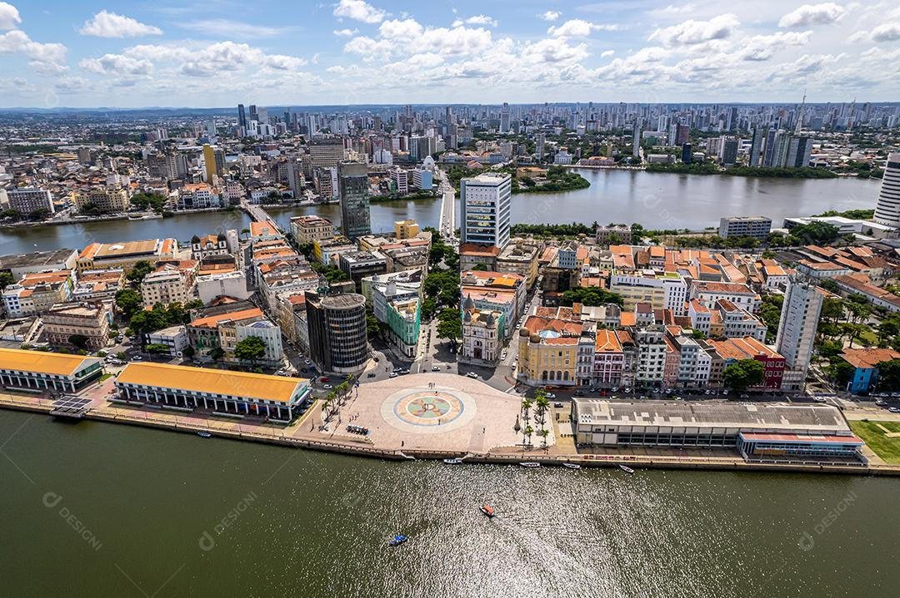

Sobre o Marco Zero
O Marco Zero do Recife é um dos pontos turísticos mais importantes da cidade. Localizado no bairro do Recife Antigo, ele marca o ponto inicial das estradas que partem da capital pernambucana para outras regiões.
O local é conhecido por sua vista deslumbrante para o mar e por ser palco de diversos eventos culturais ao longo do ano. É um ótimo lugar para passear, apreciar a arte pública e desfrutar da culinária local.
